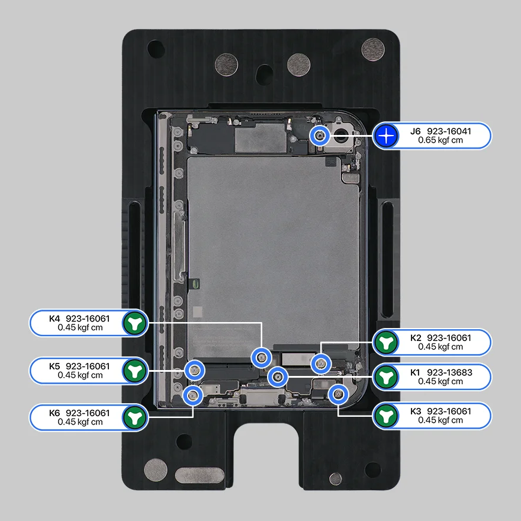

iPhone Duo
Schéma des vis
Écran externe
Écran interne
Vitre arrière
Batterie 1
Batterie 2
Appareil photo
Caméra avant interne
Caméra avant externe
Haut-parleur supérieur
Haut-parleur inférieur
Microphone principal
Moteur Taptic
Carte logique
Carte entrées-sorties
Connecteur USB-C
Boutons Touch ID et appareil photo
Boutons de volume
Châssis
Couche de protection
Ensemble écran interne
